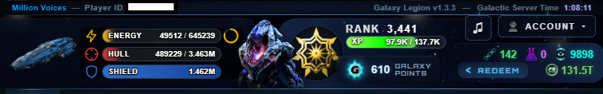
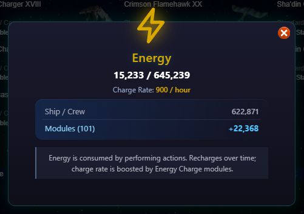
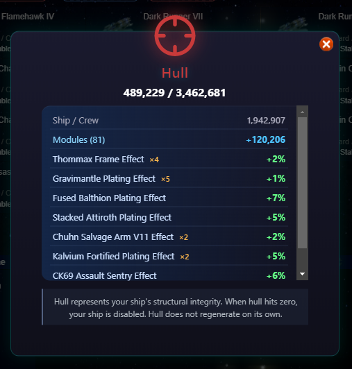
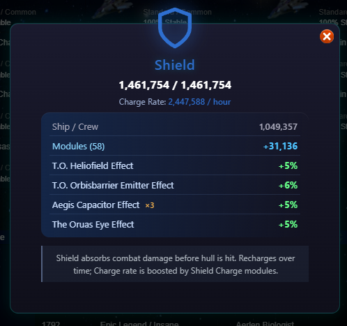
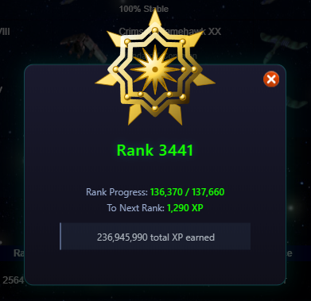

Header

This header displays at the top of the page regardless of your current tab. It displays the following information:
Your player name, which links to your ship stats
Your player ID
The game version
The Galactic Server Time, which matches the UTC time zone
Your current Ship Design, which links to the Ship tab
Your current and maximum Energy and a filling circle depicting your Energy Recharge
Your current and maximum Hull
Your current and maximum Shield and a filling circle depicting your Shield Recharge
Your current Race image, which links to the Evolution Tree tab. If this is flashing green, then Genes are available to collect
Your Galaxy Point balance
The Music menu
The Account menu
Your current Genes amount, which links to the Evolution Tree tab
Your current Research amount, which links to the Research tab
Your current Influence amount, which links to the Influence tab
The Redeem button, which accesses the Artifact Market
Your current Credits value
Energy Bar
Hovering over the Energy bar displays current vs max Energy, Energy Charge Rate, and time until you receive another point of Energy
Clicking on the Energy bar displays a pop-up with your max and current energy, your current charge rate, and the sources of you max energy.

Hull Bar
Hovering over the Hull bar displays current vs max Hull.
Clicking on the Hull bar displays a pop-up with max and current energy, along with your base hull and various bonuses.

Shield Pop-Up
Hovering over the Shield bar displays current vs max Shield and Shield Charge Rate.
Clicking on the Shield bar displays a pop-up with max and current shield level, your current shield charge rate, and your base shield and various bonuses.

Rank Area
Hovering over the XP bar displays experience needed to reach the next rank.
Clicking on your rank, rank insignia, or experience bar displays a pop-up with your rank insignia, rank, experience progress, experience needed to reach the next rank, and total experience earned.

Galaxy Points Pop-Up
Clicking on the Galaxy Points displays a pop-up with various GP purchase options.

Genes
Hovering over the Genes displays your current Genes amount and the time until you can Grow Genes.
Research
Hovering over Research will display your current Research amount and the time until you receive more Research.
Influence
Hovering over Influence will display your current Influence amount and the time until you receive more Influence.
Credits
Hovering over Credits will display your current Credits.